<!DOCTYPE html>
<html lang="es">

  <footer>
    <p>&copy; 2025 Elden Ring Fanpage. Todos los derechos reservados a Yojan Alexander Sinisterra Diaz</p>
  </footer>

  <script>
    function mostrarTexto(boton) {
      const textoExtra = boton.nextElementSibling;
      textoExtra.classList.toggle('oculto');
      boton.textContent = textoExtra.classList.contains('oculto') ? 'Leer más' : 'Leer menos';
    }
  </script>
  </body>
  </html>
   <nav class="menu">
  <ul>
    <li><a href="#Historia">Historia</a></li>
    <li><a href="#jugabilidad">Jugabilidad</a></li>
    <li><a href="#Locaciones">Locaciones</a></li>
    <li><a href="#enemigos">Enemigos</a></li>
    <li><a href="#jefes">Jefes</a></li>
    <li><a href="#npcs">NPCs</a></li>
    <li><a href="#finales">Finales</a></li>
    <li><a href="#curiosidades">Curiosidades</a></li>
    <li><a href="#galeria">Galería</a></li>
  </ul>
</nav>

  </ul>
</nav>
<html lang="es">
<head>
  <meta charset="UTF-8" />
  <meta name="viewport" content="width=device-width, initial-scale=1.0"/>
  <title>Elden Ring</title>
  <link rel="stylesheet" href="style.css" />
</head>
<body>
  <header>
    <nav class="menu">
  <ul>
    <li><a href="#Historia">Historia</a></li>
    <li><a href="#jugabilidad">Jugabilidad</a></li>
    <li><a href="#Locaciones">Locaciones</a></li>
    <li><a href="#enemigos">Enemigos</a></li>
    <li><a href="#jefes">Jefes</a></li>
    <li><a href="#npcs">NPCs</a></li>
    <li><a href="#finales">Finales</a></li>
    <li><a href="#curiosidades">Curiosidades</a></li>
    <li><a href="#galeria">Galería</a></li>
  </ul>
</nav>

  </ul>
</nav>

    <h1>Elden Ring</h1>
    <p>Explora las Tierras Intermedias en una aventura inolvidable.</p>
  </header>

  <main>
  <!-- Historia -->
  <h2 style="font-size: 2em; border-bottom: 2px solid #FFD700; padding-bottom: 0.5em;">🌑 Historia</h2>
  <section id="Historia">
  <details style="margin-top: 1em; background-color: #111; border: 1px solid #FFD700; padding: 1em; border-radius: 10px;">
    <summary style="cursor: pointer; font-weight: bold; font-size: 1.2em;">Ver historia completa</summary>
    <p style="margin-top: 1em; line-height: 1.6;">
      Cuenta la leyenda que, en un tiempo remoto, el poder del <strong>Círculo de Elden</strong> —la manifestación del orden divino— regía sobre las Tierras Intermedias. El Círculo, custodiado por el <strong>Árbol Áureo</strong> y la voluntad de una entidad suprema conocida como la <strong>Voluntad Mayor</strong>, otorgaba equilibrio, propósito y poder a los seres que lo habitaban.
    </p>
    <p>
      Pero aquel equilibrio se rompió.
    </p>
    <p>
      La Reina Márika, la Eterna, fue la encargada de salvaguardar el Círculo. Sin embargo, tras un acto enigmático —romper el Círculo con sus propias manos— el mundo se sumió en el caos. Sus fragmentos, conocidos como las <strong>Grandes Runas</strong>, fueron reclamados por sus hijos, los <strong>semidioses</strong>, desatando una guerra cruel y devastadora: <em>La Devastación</em>.
    </p>
    <p>
      Este conflicto destruyó reinos, corrompió cuerpos y almas, y envolvió a las Tierras Intermedias en una niebla de muerte, traición y desesperanza. Las bendiciones del Árbol Áureo se extinguieron para muchos, y la voluntad del Cielo pareció volverse sorda al sufrimiento de los mortales.
    </p>
    <p>
      En este mundo roto, surge el <strong>Sinluz</strong>: un exiliado olvidado por la gracia, marcado por su falta de linaje divino y condenado a vagar lejos de las Tierras Intermedias. Pero cuando la llamada de la gracia perdida vuelve a encenderse, el Sinluz regresa, guiado por ecos del pasado y una promesa de redención.
    </p>
    <p>
      Tu misión es atravesar este mundo plagado de horrores y maravillas. Desde los pantanos pútridos de <strong>Caelid</strong>, las majestuosas cumbres de los <strong>Altos de los Gigantes</strong>, hasta las ruinas doradas de la capital <strong>Leyndell</strong>, deberás enfrentarte a semidioses degenerados por el poder, criaturas deformadas por la ambición y secretos enterrados bajo siglos de oscuridad.
    </p>
    <p>
      En el camino descubrirás la verdad sobre el origen del Círculo, la rebelión de Márika, el papel de la Voluntad Mayor, y la terrible elección que te espera: ¿restaurar el orden original o romper el ciclo para siempre?
    </p>
    <p style="font-style: italic;">
      Tú no eres un héroe. Eres un Sinluz...<br>
      Pero podrías convertirte en el <strong>Señor del Círculo</strong>.
    </p>
  </details>

  </section>

  <!-- Jugabilidad -->
  <section id="jugabilidad" style="margin: 2em 0; color: #cac9c2;">
  <h2 style="font-size: 2em; border-bottom: 2px solid #FFD700; padding-bottom: 0.5em;">⚔️ Jugabilidad</h2>
  <p style="line-height: 1.6;">
    <strong>Elden Ring</strong> ofrece una jugabilidad desafiante y profunda, heredera del legado de los juegos Soulsborne. Se trata de un mundo abierto interconectado, repleto de secretos, peligros y libertad total de exploración. Los jugadores pueden recorrer enormes paisajes a caballo, infiltrarse en castillos, descubrir catacumbas ocultas o enfrentarse a jefes colosales en intensos combates cuerpo a cuerpo o a distancia.
  </p>
  <p style="line-height: 1.6;">
    El sistema de combate es fluido y estratégico, permitiendo múltiples estilos de juego: fuerza bruta, sigilo, hechicería, piromancia, invocaciones espirituales y más. Además, el jugador puede personalizar completamente su personaje, desde sus armas hasta sus hechizos y equipo. La dificultad es alta, pero cada victoria se siente merecida.
  </p>
  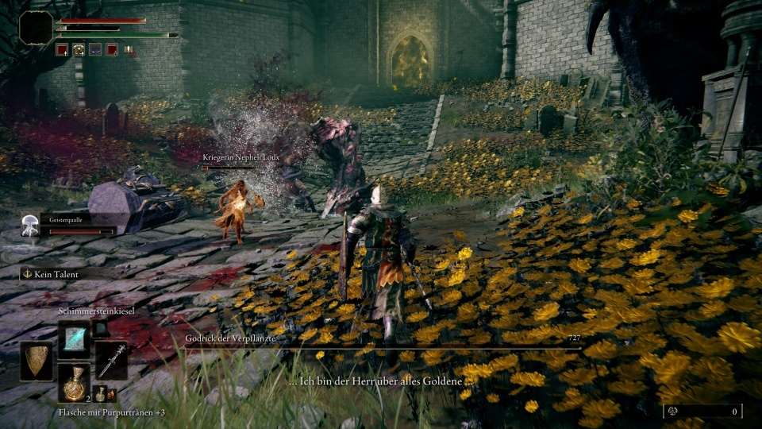🎮 Controles Básicos</h3>
  <ul style="list-style: none; padding-left: 0; line-height: 1.6;">
    <li><strong>Movimiento:</strong> Joystick izquierdo / W, A, S, D</li>
    <li><strong>Cámara:</strong> Joystick derecho / Mouse</li>
    <li><strong>Atacar (ligero/pesado):</strong> R1 / R2 o clic izquierdo / derecho</li>
    <li><strong>Bloquear:</strong> L1 / clic central</li>
    <li><strong>Rodar / Esquivar:</strong> Círculo / Barra espaciadora</li>
    <li><strong>Usar objeto:</strong> Cuadrado / Tecla rápida</li>
    <li><strong>Montar / desmontar:</strong> L1 + triángulo / Tecla asignada</li>
    <li><strong>Mapa:</strong> Panel táctil / M</li>
    <li><strong>Menú de equipo:</strong> Options / Esc</li>
  </ul>
</section>


  <h2>Locaciones Memorables</h2>
  <section id="Locaciones">
  <p>
    Las Tierras Intermedias están compuestas por zonas majestuosas y peligrosas, cada una con su estilo, enemigos y secretos únicos:
  </p>

  <h3>Necrolimbo</h3>
  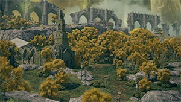
  <p>La región inicial, con castillos, catacumbas y el Castillo de Velo Tormentoso.</p>

  <h3>Liurnia de los Lagos</h3>
  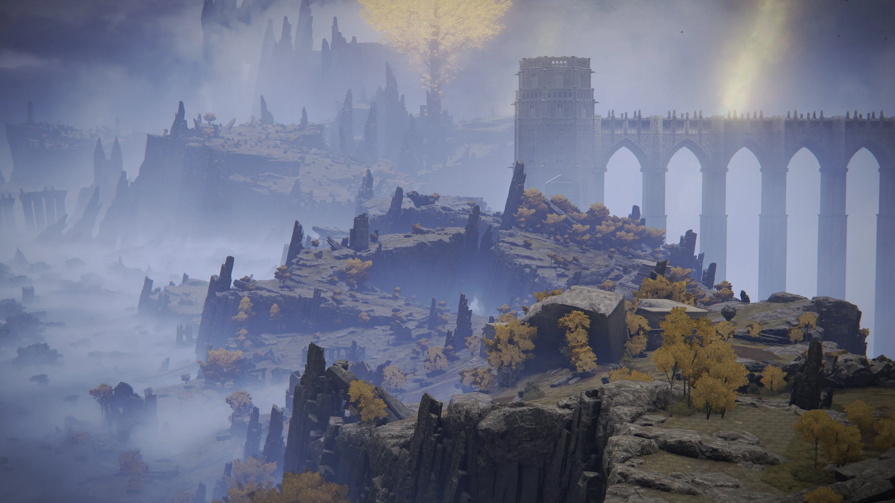
  <p>Zona de bruma, ruinas sumergidas y la poderosa Academia de Raya Lucaria.</p>

  <h3>Caelid</h3>
  
  <p>Tierra devastada por la putrefacción, hogar del temido Radahn.</p>

  <h3>Faram Azula</h3>
  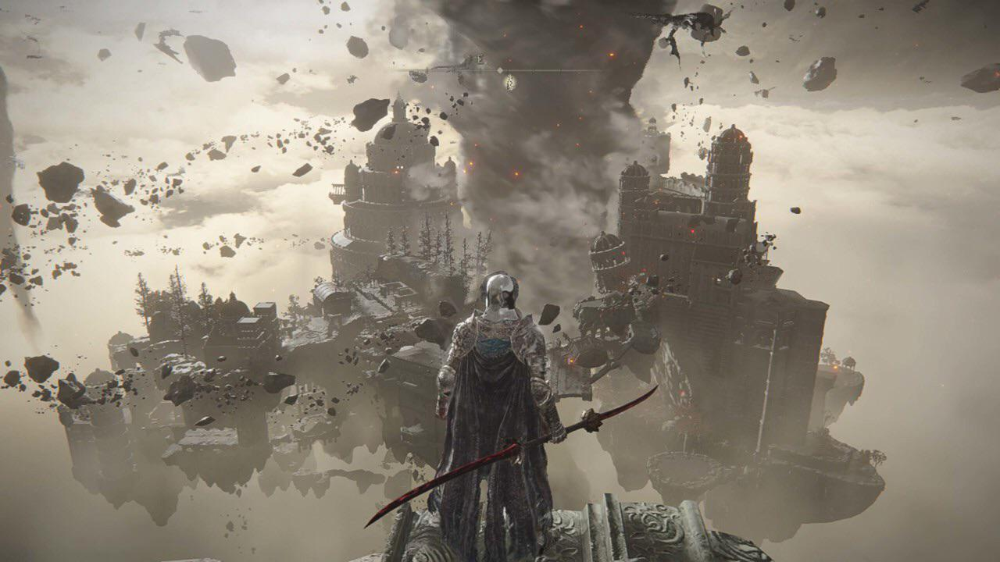
  <p>Ciudad suspendida en el tiempo, clave para la narrativa final del juego.</p>
</section>

  <section id="enemigos">
  <h2>Enemigos</h2>
  <p>
    Elden Ring está lleno de enemigos formidables que representan un verdadero desafío. Desde soldados corruptos hasta dragones colosales, el mundo está diseñado para mantenerte alerta en todo momento.
  </p>
  <button class="leer-mas-btn" onclick="mostrarTexto(this)">Leer más</button>
  <p class="extra-texto oculto">
    El juego cuenta con:
    <ul>
      <li><strong>Enemigos comunes:</strong> Son soldados, espectros, lobos, y criaturas deformadas que patrullan ruinas, castillos y bosques. Aunque más débiles, pueden sorprenderte si se agrupan.</li>
      <li><strong>Mini-jefes:</strong> Criaturas únicas con su propia arena de combate. Incluyen al Caballero del Crisol, Árbol Ulcerado o el Caballero de la Muerte. Muchos protegen cofres o rutas secretas.</li>
      <li><strong>Jefes principales:</strong> Son combates épicos, con cinemáticas, música intensa y varios patrones de ataque. Entre ellos están Margit, Godrick el Injertado, Rennala, Radahn, Maliketh y la temible Malenia.</li>
      <li><strong>Jefes secretos:</strong> Algunos enemigos extremadamente poderosos están ocultos en zonas difíciles de encontrar. Vencerlos otorga runas, armas únicas o finales alternativos.</li>
    </ul>
    <br>
    Cada enemigo tiene puntos débiles y fortalezas. Aprender sus patrones de ataque es clave para sobrevivir y avanzar.
  </p>
  <div class="galeria">
    
    
    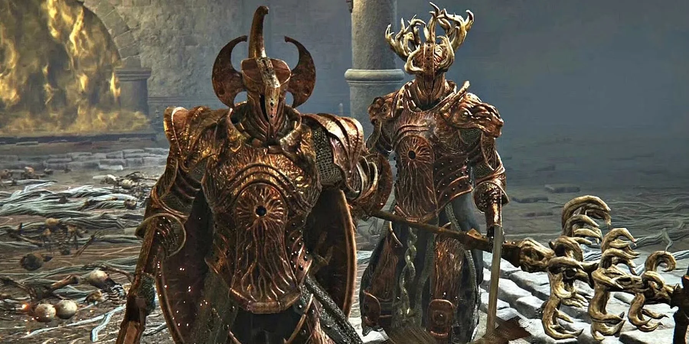
  </div>
  <section id="jefes">
  <h2>Jefes Legendarios</h2>
  <div class="jefe">
  <h3>Margit, el Augurio Caído</h3>
  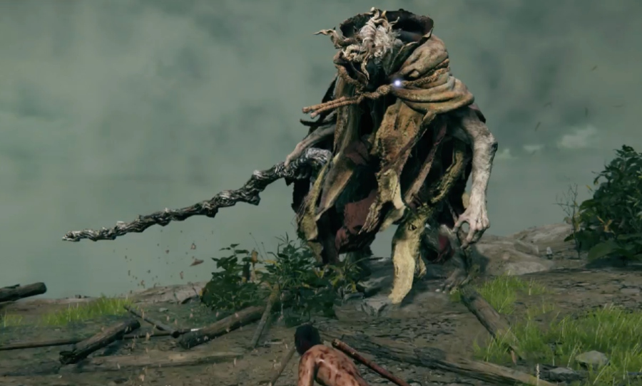
  <p>
    Margit, también conocido como Morgott, es un marginado que representa el desprecio del Árbol Áureo hacia los augurios. A pesar de ser un hijo legítimo de la Reina Márika, fue rechazado por su apariencia monstruosa. Su misión es detener al Sinluz antes de que alcance el trono. Su lucha anticipa el sufrimiento y la traición que envuelven el linaje dorado.
  </p>
</div>

<div class="jefe">
  <h3>Godrick el Injertado</h3>
  
  <p>
    Godrick es uno de los últimos descendientes del linaje dorado, débil y desesperado por poder. Su obsesión por la fuerza lo llevó a injertarse miembros de otros guerreros y monstruos. Su castillo está lleno de horrores creados por sus prácticas. Aunque se proclama poderoso, es visto como patético por otros semidioses, y su derrota simboliza el rechazo a la corrupción del poder.
  </p>
</div>

<div class="jefe">
  <h3>Rennala, Reina de la Luna Llena</h3>
  
  <p>
    Rennala fue reina de la Academia de Raya Lucaria y madre de Ranni la Bruja. Tras perder su Gran Runa, cayó en la locura y se refugió en recuerdos pasados, protegida por sus estudiantes. Su magia lunar revela una conexión profunda con la ancestral inteligencia cósmica del universo de Elden Ring, y su caída marca el fin de la gran casa de hechiceros.
  </p>
</div>

<div class="jefe">
  <h3>Radahn, Azote de las Estrellas</h3>
  
  <p>
    Radahn, uno de los guerreros más temidos, dominó la gravedad para montar su caballo pese a su tamaño descomunal. Su mente fue consumida por la putrefacción escarlata durante la guerra. Aun así, su alma continuó combatiendo eternamente en el desierto de Caelid. Su muerte libera a las estrellas, reanudando el flujo del destino cósmico.
  </p>
</div>

<div class="jefe">
  <h3>Malenia, Espada de Miquella</h3>
  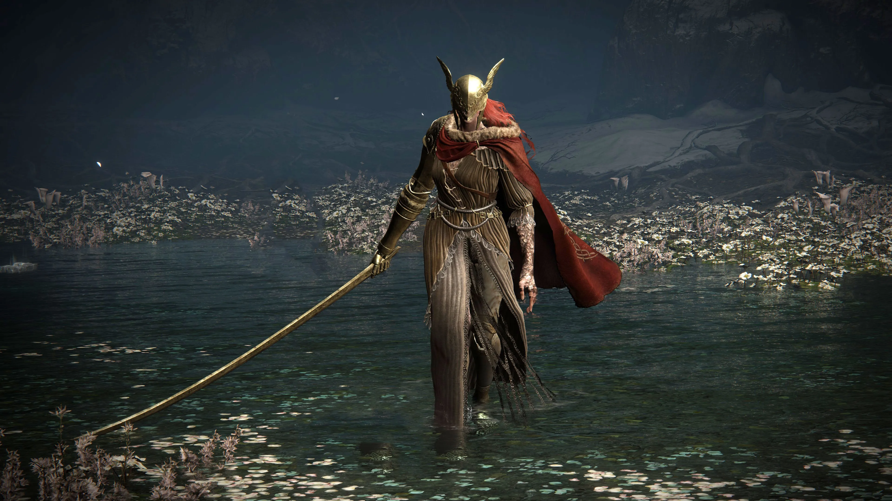
  <p>
    Malenia es considerada la guerrera más poderosa de las Tierras Intermedias. Nacida con la maldición de la Putrefacción Escarlata, lucha con elegancia y rabia para proteger a su hermano, Miquella. Su batalla contra Radahn fue tan devastadora que dejó la región de Caelid en ruinas. Su dualidad entre gracia y corrupción representa la tragedia y belleza del universo de Elden Ring.
  </p>
</div>
  </div>
  </section>
  <section id="npcs">
  <h2>Personajes Importantes (NPCs)</h2>
  <div class="npc-grid">
    <div class="npc">
      <h3>Ranni la Bruja</h3>
      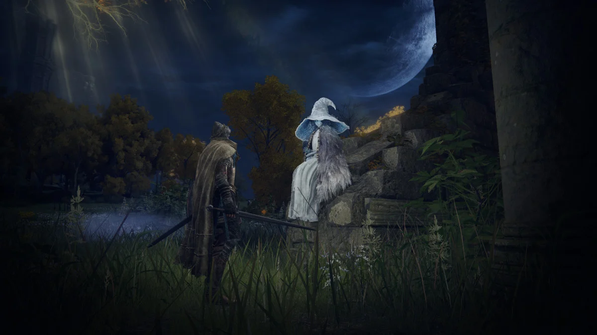
      <p>
        Ranni es una semidiosa que rechaza el Círculo de Elden. Su historia te lleva a las profundidades del mundo y a uno de los finales secretos. Su serenidad esconde una voluntad implacable.
      </p>
    </div>
    <div class="npc">
      <h3>Melina</h3>
      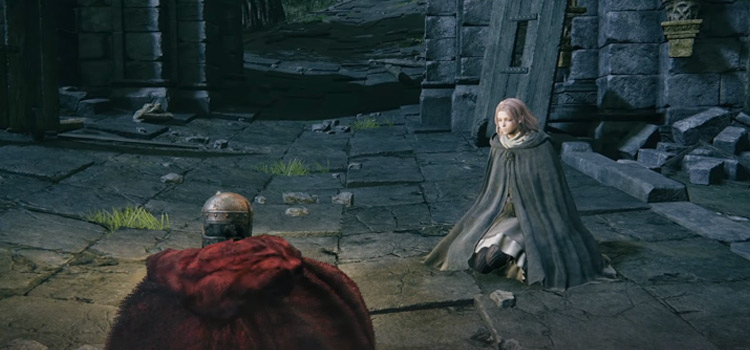
      <p>
        Una doncella misteriosa que ofrece su guía y la habilidad de subir de nivel. Su papel es crucial para el destino del Sinluz, aunque sus intenciones no siempre son claras.
      </p>
    </div>
    <div class="npc">
      <h3>Blaidd el Medio Lobo</h3>
      
      <p>
        Leal a Ranni, Blaidd es un guerrero salvaje con un gran sentido del honor. Su historia refleja el conflicto entre la lealtad y la locura impuesta por los dioses.
      </p>
    </div>
  </div>
  </section>
   
  <section id="finales">
  <h2>Finales del Juego</h2>
  <p>
    Elden Ring ofrece múltiples finales, según las decisiones que tomes y los NPC con los que te alíes:
  </p>

  <h3>El Señor del Círculo</h3>
  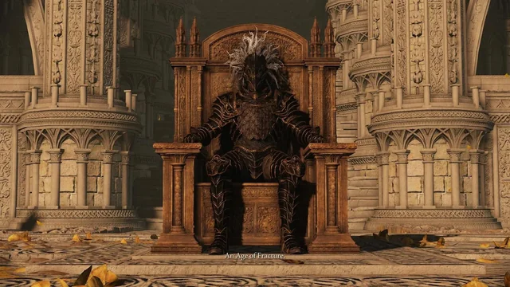
  <p>Restauras el Círculo de Elden siguiendo el camino tradicional.</p>

  <h3>Era del Crepúsculo</h3>
  
  <p>Con Ranni, traes una nueva era de oscuridad cósmica libre de dioses.</p>

  <h3>Llama Frenética</h3>
  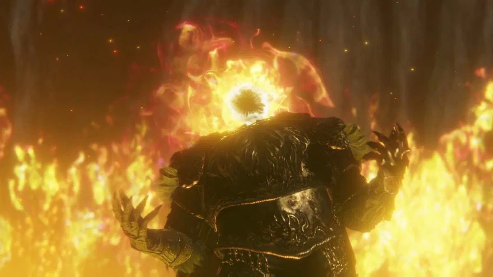
  <p>Al abrazar la locura del Caos, destruyes el orden establecido.</p>

  <h3>Muerte Predestinada</h3>
  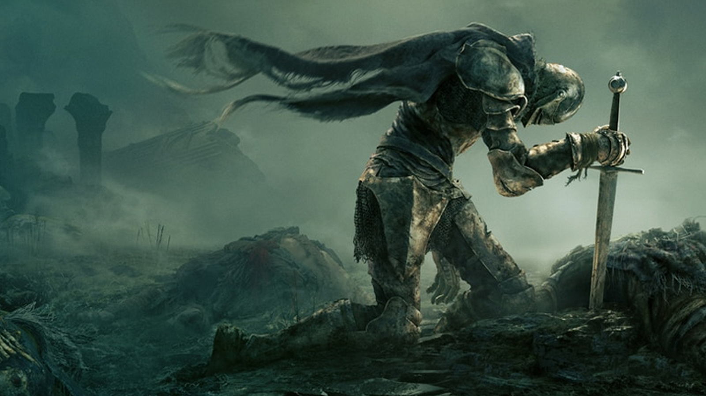
  <p>Con Fia, introduces la muerte natural como ciclo en el mundo.</p>
</section>

  </section>

  <!-- Curiosidades -->
  <section id="curiosidades">
  <h2>Curiosidades sobre Elden Ring</h2>

  <h3>1. El mapa se inspira en ilustraciones medievales</h3>
  <p>
    El mapa de Elden Ring está diseñado como si fuera un pergamino antiguo, lleno de detalles artísticos. Los desarrolladores se inspiraron en mapas reales de la Edad Media para crear una estética más orgánica y misteriosa.
  </p>

  <h3>2. El Árbol Áureo es visible desde casi cualquier parte del juego</h3>
  <p>
    El Árbol Áureo no es solo parte del fondo: es una referencia visual constante que guía al jugador desde cualquier región. Su presencia es intencionada para representar el objetivo y el poder central del juego.
  </p>

  <h3>3. El caballo, Torrentera, fue idea de George R. R. Martin</h3>
  <p>
    Según entrevistas, Martin propuso la idea de un compañero montable que fuera útil en combate y exploración. De ahí nació Torrentera, uno de los aspectos más queridos del juego.
  </p>

  <h3>4. Hay enemigos ocultos que solo aparecen en condiciones especiales</h3>
  <p>
    Algunos jefes o mini-jefes solo aparecen de noche, con mal tiempo o después de ciertos eventos. Esto fomenta la exploración y la experimentación.
  </p>

  <h3>5. Puedes encontrar un trasfondo para casi cada objeto</h3>
  <p>
    Incluso los objetos más simples tienen descripciones que revelan detalles del mundo y sus personajes. Leer los textos de los ítems es clave para entender el lore.
  </p>

  <h3>6. Referencias ocultas a Dark Souls y Bloodborne</h3>
  <p>
    Desde animaciones hasta diseño de armas y arquitectura, los fans han encontrado múltiples referencias sutiles a los títulos anteriores de FromSoftware. Por ejemplo, la armadura del Caballero de la Mesa Redonda recuerda al Guerrero Solar de Dark Souls.
  </p>

  <h3>7. Puedes completar el juego sin matar a ciertos jefes</h3>
  <p>
    Aunque hay jefes principales obligatorios, otros son opcionales. Esto permite rutas de juego muy diferentes entre jugadores.
  </p>

  <h3>8. El juego puede detectar si haces trampa</h3>
  <p>
    Si usas hacks o modificas el juego, *Elden Ring* puede activarte una "marca de infractor" que evita el emparejamiento con otros jugadores honestos.
  </p>

  <h3>9. Hay personajes con líneas de diálogo que cambian según tus acciones</h3>
  <p>
    Algunos NPC te tratan diferente si has matado a otro personaje, o si tienes ciertas armas o efectos activos. Esto afecta el desenlace de muchas misiones.
  </p>

  <h3>10. El jefe más difícil no es obligatorio</h3>
  <p>
    Malenia, Espada de Miquella, considerada por muchos el jefe más complicado del juego, es completamente opcional. Sin embargo, derrotarla es uno de los logros más respetados entre los fans.
  </p>
</section>


  <!-- Galería -->
  <section id="galeria">
    <h2>Galería</h2>
    <p>Explora algunos momentos y lugares épicos del juego:</p>
    <div class="galeria">
      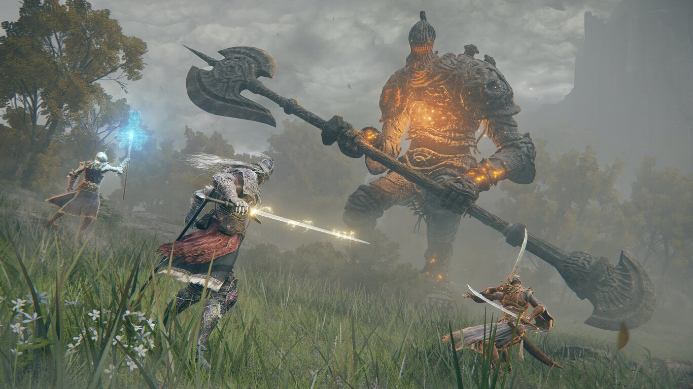
      
      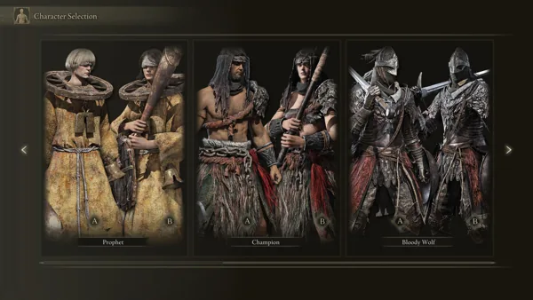
      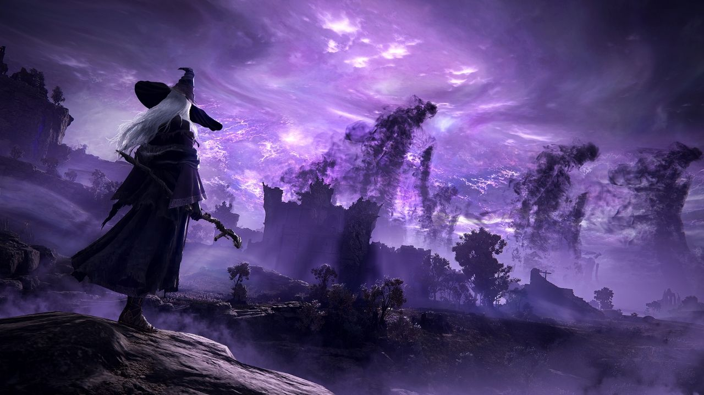
      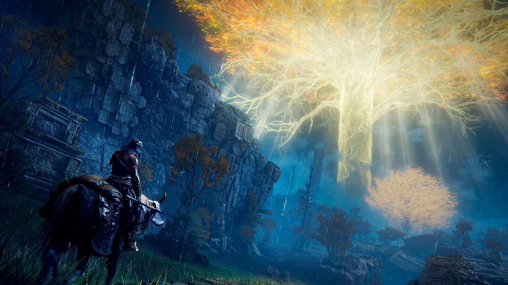
      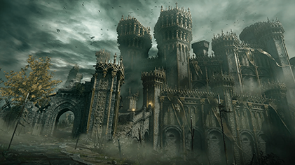
    </div>
    <div class="video">
      <h3>Tráiler oficial</h3>
      <iframe width="100%" height="400" src="https://www.youtube.com/embed/E3Huy2cdih0" title="Tráiler oficial Elden Ring" frameborder="0" allowfullscreen></iframe>
    </div>
  </section>
</main>


  <footer>
    <p>&copy; 2025 Elden Ring Fanpage. Todos los derechos reservados a Yojan alexander Sinisterra Diaz </p>
  </footer>

  <script src="script.js"></script>
</body>
<button id="volver-arriba" onclick="window.scrollTo({top: 0, behavior: 'smooth'});">⬆️</button>
<a href="https://www.eldenring.com" target="_blank">Visitar página oficial de Elden Ring</a>

</html>
